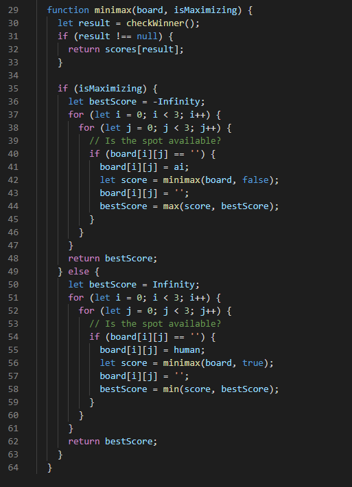
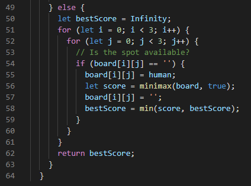

This Tic Tac Toe AI utilises the traditional Minimax algorithm inside of Javascript. The Minimax function is coded as follows
This function contains code for both the Maximiser & the Minimiser in the algorithm. When it is the Maximisers turn, the best score
is set to the lowest possible value of "-INFINITY". This then allows the for loops (i is rows, j is columns) to iterate through the board,
finding the next highest scored move and replacing the "bestScore" variable value with it.
The same is true for the minmiser, except the initial best score is the highest possible value of "+INFINITY".
